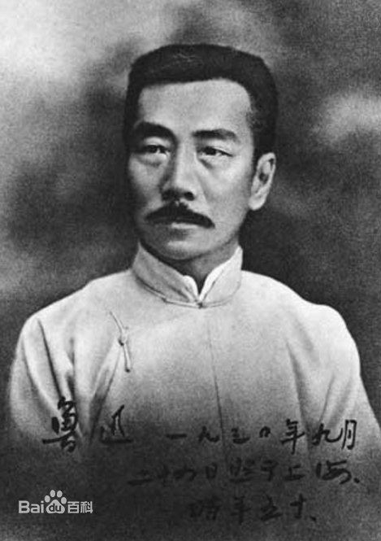

鲁迅（1881年9月25日－1936年10月19日），原名周樟寿，后改名周树人，字豫山，后改豫才，“鲁迅”是他1918年发表《狂人日记》时所用的笔名，也是他影响最为广泛的笔名，浙江绍兴人。著名文学家、思想家，五四新文化运动的重要参与者，中国现代文学的奠基人。毛泽东曾评价：“鲁迅的方向，就是中华民族新文化的方向。
鲁迅生前所创作的未结集出版的杂文作品死后由蔡元培、许广平等整理出版纳入第一版鲁迅全集中，然而时间仓促，难免遗珠，1948年、1952年唐弢又整理出版了《鲁迅全集补遗》、《鲁迅全集补遗续编》，这些文章后以不同分类方式纳入各种版本的鲁迅全集之中，在这些全集中对这些文章总集所取名目颇多，皆以人民文学出版社2005年版《鲁迅全集》所取名为准。
鲁迅散文也有着重要的地位，主要作品结集为 《朝花夕拾》 和《野草》。前者以追忆儿时往事为主，平易晓畅，风趣生动。代表作有《朝花夕拾》；散文诗集《野草》《坟》《热风》《华盖集》《华盖集续编》《南腔北调集》《三闲集》《二心集》《而已集》《且介亭杂文》等。《野草》则以尼采式的散文诗形式，表达对社会、人生的批判反思，反映了作者当时虚无主义的悲观心境。语言色彩艳丽而冷峻峭拔，意象独特而富有暗示性，意境晦暗幽深。对日后中国白话散文诗的发展有着一定影响。
鲁迅并不看重自己的诗歌创作，只是偶尔为之。其诗作传世无多，主要以旧体诗为主，多有佳句。早期诗歌深受古诗影响，多吟咏离情感伤。留学日本时作《自题小像》，“寄意寒星荃不察，我以我血荐轩辕”，真切动人，境界大开。《四一二事变》一诗（惯于长夜过春时，挈妇将雏鬓有丝。梦里依稀慈母泪，城头变幻大王旗。忍看朋辈成新鬼，怒向刀丛觅小诗。吟罢低眉无写处，月光如水照缁衣），写出乱世友人遭逢政治迫害情景，令人为之动容；赵聪《三十年代文坛点将录》说，时人称“三百年来无此作！”。1922年创作《彷徨·题辞》：“寂寞新文苑，平安旧战场。两间余一卒，荷戟独彷徨”，描述文学创作路上呕心沥血孤行，也是著名代表作之一。 相较同时代的其他诗人，鲁迅的诗歌在当代被引用的频率很高。“度尽劫波兄弟在，相逢一笑泯恩仇”（《题三义塔》），是常被引用来表示国共和解，和海峡两岸和解的名句，如温家宝在2008年3月18日十一届全国人大一次会议闭幕后，回答台湾记者提问“是否会对台湾释出更多的经贸优惠政策”，温家宝回答中引用这句话。“横眉冷对千夫指，俯首甘为孺子牛”，则常被引用以自况。
鲁迅也以译作著名。在鲁迅留下的1000多万字作品中，有一半是翻译文字。他在前期主要翻译欧美文学及日本文学作品，如尼采、凡尔纳等，后期则主要翻译东欧文学及苏联文学的革命文学作品。他的翻译强调忠实原文，有时甚至连原句的结构也不加改动，以“硬译”风格闻名。他曾希望借引入欧式的长句，来增加汉语对复杂关系的表现力。据统计，鲁迅总共翻译过14个国家近百位作家200多种作品。
鲁迅在学术上也有很高的造诣，著有《中国小说史略》、《汉文学史纲要》等。此外还有《鲁迅书信集》、《鲁迅日记》等存世。
| 著作名称 | 出版信息 |
| 《中国小说史略》 | 1923年12月，上册；1924年6月，下册，北大新潮出版社 |
| 《汉文学史纲要》 | 1938年，鲁迅全集出版社，鲁迅全集委员会整理 |
| 《中国小说的历史的变迁》 | 1938年，鲁迅全集出版社，鲁迅全集委员会整理 |
鲁迅说他写作的目的，一是“为那些为中国的改革而‘奔驰的猛士’”,他们在寂寞中奋战，我有责任为他们呐喊，要给予他们哪怕是微弱的慰藉”。
二是为那些“如我年轻时候似的正做着美梦的青年，正是因为他们，我‘必须在作品中’处处给予一种不退走，不悲观，不绝望的诱导，而对自己内心深处的悲凉感有所扼制（何况我对于悲凉感本身也是持有怀疑态度的）”。
三是他的敌人，鲁迅说，“我的敌人活得太愉快了，我干嘛要让他们那么愉快呢？我要像一个黑色魔鬼那样，站在他们面前，使他们感到不圆满” 。